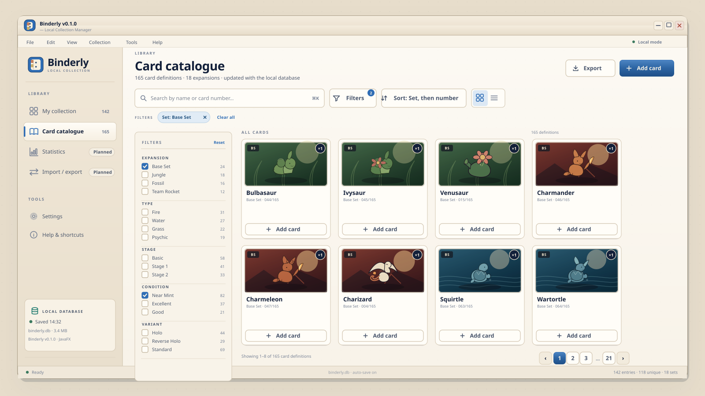
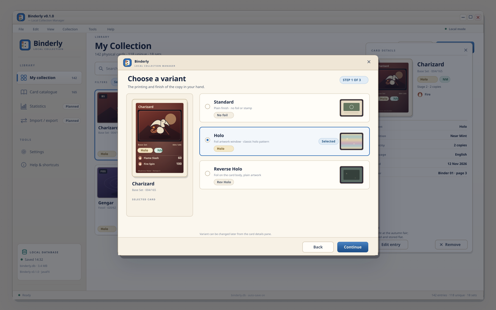
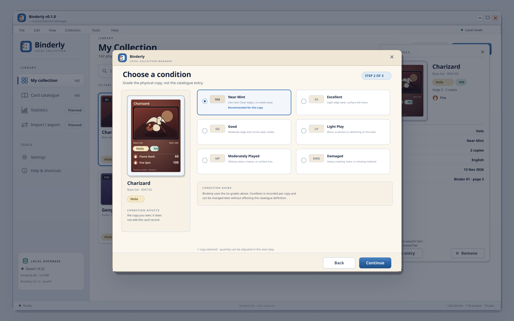
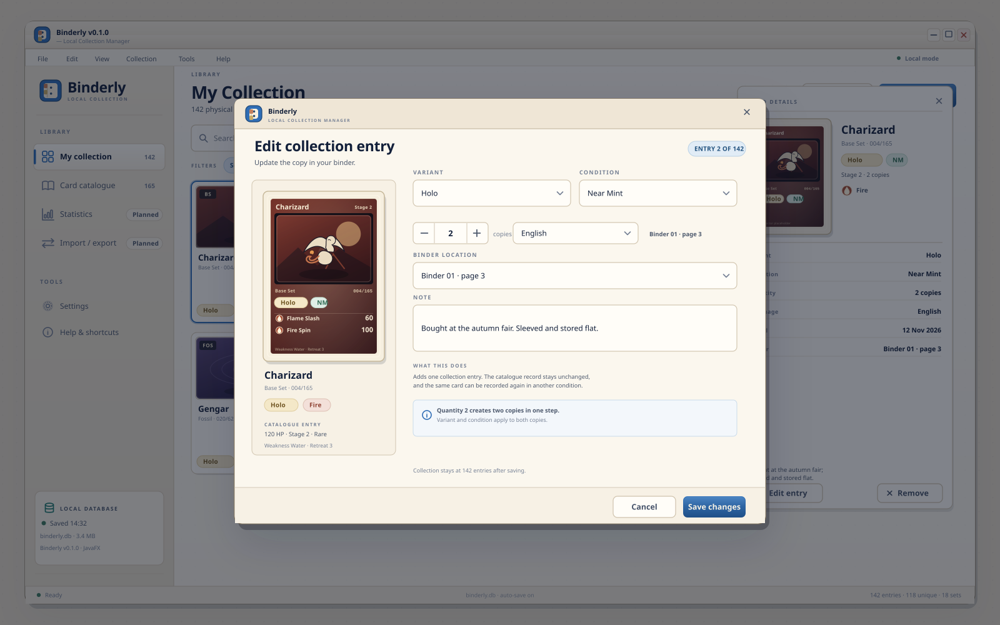

Matte
Standard
Foil: none
The regular, non-foil print. The artwork has no holographic layer, and the card looks like the plain version from that set.
Guide 2 of 5
Every entry in Binderly answers three questions: which card, which finish, and which condition. Then it records how many copies you own. This guide walks through making that record, and keeping it true as your binder changes.
Binderly keeps two things carefully apart: the catalogue of cards that exist, and your collection of the copies you actually own.
The catalogue supplies the facts — the name, the set, the collector number, and the variants in which that print exists. Your collection supplies the personal part: which of those prints is in your binder, how it has held up, and how many copies you have.
That is why adding a card always follows the same three questions: which card, which variant, and which condition. The quantity comes last.
One card + one variant + one condition = one entry. Everything else in this guide follows from that rule.
Entry identity
1 Card ID + 1 Variant + 1 Condition = 1 Collection Entry
Tracks identical copies behind that entry — same card, same variant, same condition.
Seven steps from “I own this one” to a saved entry. Have the physical card in front of you — the finish and the wear are easier to judge in your hand than from memory.
Start in the catalogue, not in your collection. The catalogue is the library of cards that exist; it is where every new entry begins. Open it from the main navigation.

Type what you know. A full card name works, and so does part of one. If two cards share a name, add the collector number printed in the corner, such as 58/102, to narrow the results.

Cards share names across sets, so check more than the name before you continue. The record you create now is the one you will live with, and the set and number are what tell two lookalikes apart.
Card verification
4 checksCollector no. 4/102
All four agree — select the card.
The dialog lists the variants that exist for the card you selected. Choose the finish in your hand: Standard, Holo, Reverse Holo, or another option the catalogue specifies. Pick what you see, not what you wish you had.
How to tell the variants apartVariant quick-check
Tilt to lightThe dialog lists only valid variants. A missing finish means the catalogue does not record it for this print.
Compare the surface, edges, corners, and any creases with the six conditions below. Choose the closest description, not the most flattering one: the collection should match the card in your hand.
Read the six conditionsPhysical inspection
4 pointsChoose the closest condition, not the most flattering one.
Count only the copies that match this card, this variant, and this condition. If two of your three copies are Near Mint and one is Played, that is one entry with quantity 2 and a second entry with quantity 1.
Quantity split
3 copies2× Near Mint + 1× Played = 2 separate entries
Quantity is not your binder total. It counts the identical copies — same card, same variant, same condition — behind this entry.
Confirm the entry to add it to your collection. If an entry with the same card, variant, and condition already exists, Binderly increases its quantity instead of creating a duplicate. The change is saved locally.
What happens when entries match
If a card is not in the catalogue
Manual card entry — adding a card the catalogue does not list — is planned for a later release and is not part of the current build. Planned
The same card can reach your binder in more than one finish. The variant records which finish you actually own.
Follow the foil
Foil: none
The regular, non-foil print. The artwork has no holographic layer, and the card looks like the plain version from that set.
Foil: artwork window
The artwork window is holographic. Tilt the card and the illustration catches the light while the rest of the card stays matte.
Foil: card body
Where a set includes reverse holos, the foil moves to the card body: the area around the artwork catches the light while the artwork window stays non-foil.
Foil: varies by print
Some cards have additional finishes. When the card catalogue specifies another variant, it appears alongside the base three. Only variants valid for the selected card are presented, so you are never asked to choose a finish that does not exist for that print.
Shaded areas in the mini cards show where the foil sits; flat cream is matte.
The dialog lists the variants recorded for the selected card. If a finish is missing, check that you selected the right card and set first; if those are right, the list is complete.
Only valid variants are offered, so you are never asked to choose a finish that does not exist for that print.

Six descriptions, from a card that still looks pack-fresh to one that has lived a life. Pick the one that matches what you see.
Bar length shows how much of the card's original finish remains.
No visible wear
Pack-fresh. No visible wear on the surface, edges, or corners — nothing you would notice even under a light.
One tiny flaw
At most one tiny flaw, visible only on close inspection. The card still looks as though it was pulled this week.
Light wear
Light wear you can see: a little edge whitening, a faint scratch, or slight corner softening. No creases.
Honest handling
Honest handling wear: whitening along the edges, light scratches, or a small bend. The artwork is still clean.
Heavy wear
Well-loved. Heavy edge wear, scuffs, or noticeable scratches. The card is intact and still recognisable.
Impaired
Creases, tears, staining, or missing material. Keep it recorded so your binder and your digital collection still agree.

Condition is a judgement, not a measurement. Look at the card under a bright light and compare it with the description that fits best. A little honest wear is not a reason to skip recording a card — consistency matters more than optimism, because the record should still make sense the next time you check your binder.
A Near Mint copy and a Played copy of the same card are two separate entries. If a card's condition changes over time, update the entry rather than leaving the old description in place.
Binderly records the condition you choose. It does not estimate what a card is worth; the condition is simply the description you give it.
Collections change. A second copy arrives, a card picks up wear, a finish turns out to be different from what you first thought. Editing the entry keeps the record honest.

A second copy of the same print arrives, so raise the quantity. One leaves the binder, so lower it. Keeping the number current is the difference between a list and a record.
Cards pick up wear. If a Near Mint card becomes Excellent after a few years in a binder, edit the condition so the entry still describes the object on the shelf.
If you recorded the standard print but the card is actually reverse holo, correct the variant instead of deleting the entry and starting again.
When a card leaves your collection entirely, remove the entry. Removing deletes the entry and its quantity, and it is confirmed first.
How removal is confirmedAn edit that makes one entry match another is a merge, and merges are confirmed before they happen. Read about duplicate handling.
Binderly groups entries by identity, not by name. The card ID, the variant, and the condition decide whether two records describe the same stack of cards.
Same identityMerge
Card ID, variant, and condition all match. The existing entry absorbs the new copy instead of creating a second record.
One entry. Quantity 3.
Any value differsSeparate
A Holo Near Mint and a Reverse Holo Near Mint are different entries, even though the card is the same. So are two Holo copies in different conditions.
Two entries. Each keeps its own quantity.
Worked example — rows 1 and 2 share one identity and merge; rows 3 and 4 differ by one value and stay separate.
Swipe the table sideways to see the result column.
| Card | Variant | Condition | Quantity | Result |
|---|---|---|---|---|
| Charizard | Holo | Near Mint | 2 | Existing entry |
| Charizard | Holo | Near Mint | 1 | Merge → qty 3 |
| Charizard | Holo | Excellent | 1 | Separate entry |
| Charizard | Standard | Near Mint | 1 | Separate entry |
An edit that creates a match asks first
Suppose you correct an entry from Standard to Holo, and a Holo entry with the same condition already exists. Combining them would change two records at once, so Binderly asks for confirmation before the entries merge. Nothing is combined until you agree.
Removing is for a card you no longer own — not for adjusting a quantity.
Still own the cardKeep entry
You have three copies and one leaves the binder. Edit the quantity from 3 to 2. The entry stays, and the card remains in your collection.
Entry kept · quantity updated
Use Edit on the entry.
No longer own the cardRemove
The card has left your collection. Remove deletes the entry and every copy counted behind it. This is not a quantity change.
Entry deleted · confirmation required
Use Remove, then read the dialog.
Open the entry and choose Remove. The confirmation dialog names the card, variant, and condition, so you can check that it is the entry you meant. Confirm, and the entry and its quantity are removed from the collection.
Nothing is removed without confirmation. Removal takes the whole entry with it, so read the details in the dialog before you confirm.

Everything in this guide ends the same way: a change stored on your device.
Your collection, on your device
Adding a card, correcting a variant, lowering a quantity, removing an entry — each change is written to the collection on the machine where you use Binderly. There is no account and no cloud sync, so the collection stays with that device and is there between normal sessions.
Binderly is a single-user desktop app. The collection on one device is not a shared library or a social profile; it is your own record of the cards you own.
Backups are not available yet
Import and export are planned and are not part of the current build. Until they ship, Binderly cannot create or restore a backup file, so moving a collection between devices is not yet supported. Planned